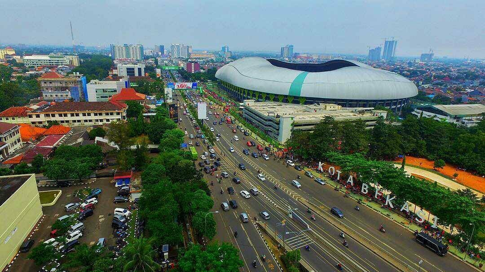

Kondisi Geografis Kota Bekasi

Luas Wilayah dan Letak Geografis
Kota Bekasi memiliki luas wilayah sekitar 210,49 km2, dengan batas wilayah Kota Bekasi adalah:
• Sebelah Utara : Kabupaten Bekasi
• Sebelah Selatan : Kabupaten Bogor dan Kota Depok
• Sebelah Barat : Provinsi DKI Jakarta
• Sebelah Timur : Kabupaten Bekasi
Letak geografis : 106o48’28’’ – 107o27’29’’ Bujur Timur dan 6o10’6’’ – 6o30’6’’ Lintang Selatan.
Topograpi
Kondisi Topografi kota Bekasi dengan kemiringan antara 0 – 2 % dan terletak pada ketinggian antara 11 m – 81 m di atas permukaan air laut.
• Ketinggian >25 m : Kecamatan Medan Satria, Bekasi Utara, Bekasi Selatan, Bekasi Timur dan Pondok Gede
• Ketinggian 25 – 100 m : Kecamatan Bantargebang, Pondok Melati, Jatiasih
Wilayah dengan ketinggian dan kemiringan rendah yang menyebabkan daerah tersebut banyak genangan, terutama pada saat musim hujan yaitu: di Kecamatan Jatiasih, Bekasi Timur, Rawalumbu, Bekasi Selatan, Bekasi Barat, dan Kecamatan Pondok Melati.
Geologi dan Jenis Tanah
Struktur geologi wilayah Kota Bekasi didominasi oleh pleistocene volcanik facies namun terdapat dua kecamatan yang memiliki karakteristik struktur lainnya yaitu:
• Bekasi Utara : Struktur Aluvium
• Bekasi Timur : Struktur Miocene Sedimentary Facies
Di Bekasi Selatan terdapat sumur gas JNG-A (106o 55’ 8,687” BT; 06o 20’54,051”) dan Sumur JNGB (106o 55’ 21,155” BT; 06o 21’ 10,498”)